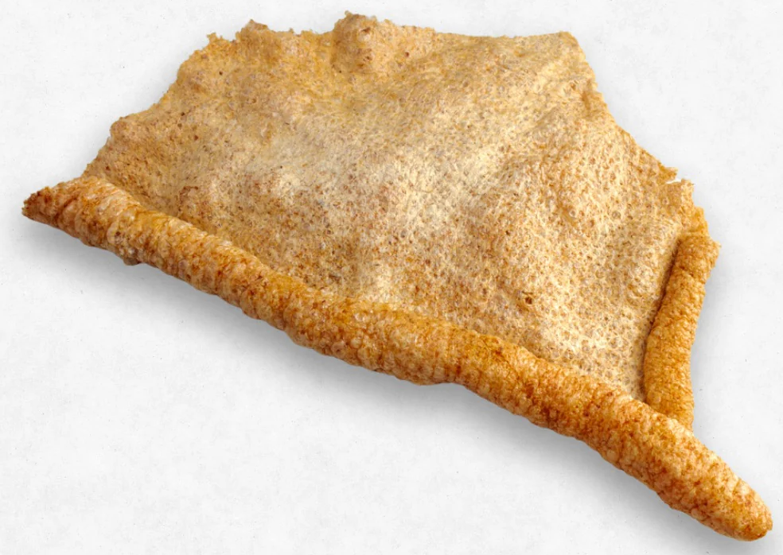

Among the diverse street food available in Mexico, plenty of which can be considered a snack that can quickly evolve into a full meal, there are those based on a piece of bread called "bolillo". Said dishes are basically a sandwich, however, depending on the ingredients, seasoning, and craft style of the one preparing the samich, you could end with a great variety of flavors even with the same elements.
The guacamaya is a local sandwich from the Bajío region (roughly to the northwest of Mexico City). Is basically bred, a particular type of pork rind and a simple but tasty sauce based on tomato and onion cubes, a bit of bird's beak pepper, and coriander.
Please do note that the pork rind for this snack is a specific type of rind made in sheets.

Sauce
Sandwich
Sauce
Assemble